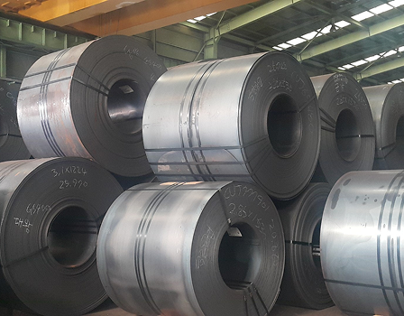
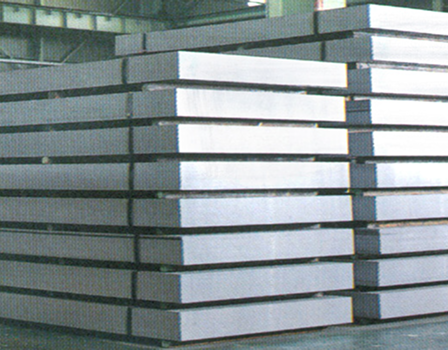
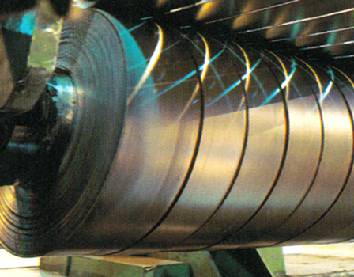
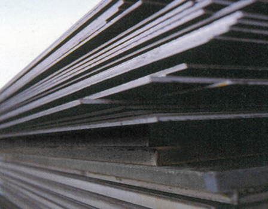
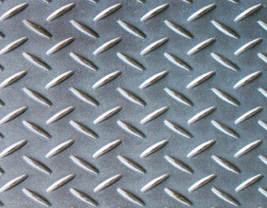
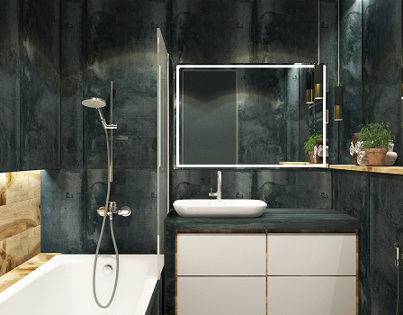
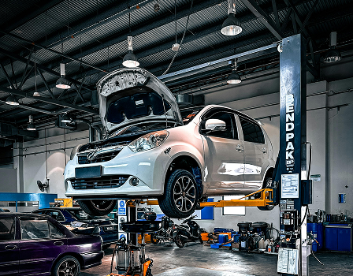
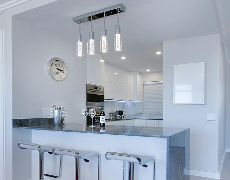
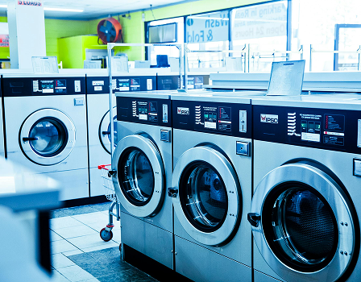

- 열연
- 냉연
열연 제품
Hot-Rolled Steel
열연제품은 열간압연기에 의해 생산된 열연코일과 이를 절판한 열연강판으로 구성됩니다.
냉연· 전기강판의 중간소재로 사용되어 고부가가치 제품으로 재가공됩니다.
강도가 높고 용접성 · 가공성 · 내식성 등이 뛰어나 산업 전반에서 다양하게 활용됩니다.
열연 제품 적용 부문
Hot-Rolled Steel Application Division투엠스틸에서 제작된 열연 제품은 플랜트, 선박 등의 분야에 사용되고 있습니다.
- 플랜트 부문 극한 환경에서의 내구성
- 선박 부문 고강도의 내구성
열연 제품 종류
Type of Hot-Rolled Steel- 열연코일
- 열연박판
- 열연스켈프
- 후판
- 무늬강판

열연코일
Hot-Rolled Coil 일반구조용강과 용접구조용강이 생산되며 철구조물, 교량, 선박, 차량 제작 등에 사용됩니다.

열연박판
Hot-Rolled Plate 특수원소를 첨가하여 내식성과 내후성이 우수하여 컨테이너, 특수차량 제작에 쓰이며 건축 구조물에도 사용됩니다.

열연스켈프
Hot-Rolled Skelp 용접성이 우수한 고강도 강판으로 자동차의 프레임, 휠 등에 사용됩니다.

후판
Plates 일반 용접구조물, 교량, 산업기계, 건축, 해양구조물 등 가장 널리 사용되는 강판입니다.

무늬강판
Checked Coil 오목하게 연삭된 Roll에 의해 압하를 받아 짠 표면의 체크 무늬의 타원형 엠보싱 형태로 만든 제품입니다.냉연 제품
Cold-Rolled Steel
냉연 제품은 열연을 소재로 산세, 냉간 압연, 열처리를 통해 제조되며, 두께 0.2~2.0mm의 비교적 얇은 강판입니다.
냉연강판은 표면이 미려하고 가공성이 우수한 소재로 냉장고, 세탁기 등 가정용품에서부터
산업기기, 각종 건자재 및 자동차에 이르기까지 다양한 용도로 사용되며
산업구조의 고도화에 따라 현대사회의 필수 소재로 각광받고 있습니다.
냉연 제품 적용 부문
Cold-Rolled Steel Application Division투엠스틸에서 제작된 냉연 제품은 가전 분야에 사용되고 있습니다.
- 가전 부문 우수한 내식성과 고품질 마감
냉연 제품 종류
Type of Cold-Rolled Steel- 냉연코일
- 용융아연도금제품
- 전기아연도금강판
- 산세강판

냉연코일
Cold-Rolled Coil 냉장고 도어, 드럼, 가구제작, 자동차, 주방 및 욕조 등에 사용합니다.

용융아연도금제품
Galvanized Steel 가전제품, 도장강판소재, 건자재, 가구용 소재, 가전기기의 내부부품, 조명기기, 자동차 등에 사용합니다.

전기아연도금강판
Electrical Galvanized Iron 냉간압연 및 소둔 처리한 제품에 전기화학적으로 표면에 도금한 제품으로 가전기기, 자동차용 등으로 많이 쓰이는 제품입니다.
